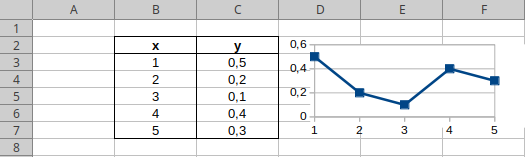
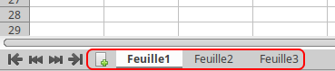

CM1 : Prise en main
Un tableur est un logiciel permettant :
- d'organiser des données sous forme de grilles ;
- d'effectuer des calculs sur des séries de données ;
- puis de tracer des graphiques à partir de ces données.

Feuille de calcul
Une feuille de calcul est une grille composée de lignes et de colonnes :
- les lignes sont horizontales et identifiées par un nombre.
- les colonnes sont verticales et identifiées par une lettre.
L'intersection d'une ligne et d'une colonne est appelée cellule. Elle est identifiée par sa lettre de colonne, suivie de son numéro de ligne. Les identifiants des lignes et des colonnes sont indiqués par les en-têtes gris.
Sélectionner une cellule
Un curseur représenté sous la forme d'un cadre bleu indique la cellule active. Pour sélectionner une cellule, cliquez sur cette dernière. Vous remarquerez alors que ses coordonnées sont mises en surbrillances, et que son identifiant s'affiche en haut à gauche :
💡 Vous pouvez aussi sélectionner une cellule en indiquant son identifiant en haut à gauche, puis en appuyant sur la touche (entrée).
💡 Vous pouvez aussi déplacer le curseur grâce aux touches directionnelles. Si utilisées avec la touche (contrôle) appuyée, le curseur se déplacera alors dans la direction indiquée jusqu'à, soit la première cellule non-vide, soit la dernière cellule non-vide avant une cellule vide :
Remplacer et éditer le contenu d'une cellule
Une cellule peut contenir des valeur de type :
- texte : par défaut aligné à gauche ;
- nombre : par défaut aligné à droite ;
- booléen : par défaut aligné à droite ( ou );
- date : par défaut aligné à droite ;
- formule : calcul la valeur de la cellule à partir d'autres cellules (cf suite).
Les cellules sont initialement vides. Pour remplacer le contenu d'une cellule, sélectionnez-là, puis tapez sa valeur au clavier, avant de valider en appuyant sur la touche (entrée). Vous remarquerez que sa valeur s'affiche dans la barre de formule, en haut à droite :
💡 Pour éditer la valeur d'une cellule, double-cliquez dessus (ou cliquez sur la barre des formules), puis appuyez sur la touche (entrée) pour valider vos modifications.
💡 Pour supprimer la valeur d'une cellule, sélectionnez-là puis appuyez sur la touche (supprimer).
Formules
Un intérêt majeur des tableurs et des feuilles de calculs sont les formules. Une formule permet de calculer la valeur d'une cellule à partir d'autres cellules :
💡 Modifier les cellules des colonnes ou mettra automatiquement à jour celles de la colonne .
💡 Par défaut, seule la valeur s'affiche dans la cellule. La formule d'une cellule s'affiche dans la barre de formule, ainsi que lors de l'édition de la cellule.
Écrire une formule
Une formule commence toujours par le signe suivi d'une expression. Comme pour une formule mathématique, vous pouvez utiliser plusieurs opérateurs :
- de comparaisons : égalité (), inégalité (), , , , .
- arithmétiques : l'addition (), la soustraction/négation (), la multiplication (), la division (), la puissance (), et le pourcentage ().
- concaténation : .
Les opérandes peuvent être une valeur ou une référence à une autre cellule. Chaque référence de cellule (i.e. son identifiant) est remplacée par la valeur de la cellule. Par exemple, la formule est calculée comme la valeur de la cellule multipliée par .
💡 Bien évidemment, comme en mathématiques, vous pouvez utiliser des parenthèses afin de déterminer l'ordre des opérations.
💡 En cas d'erreur dans la formule, la cellule affichera (non implémenté ici).
⚠ Les formules peuvent très vite devenir complexes et difficiles à lire. N'hésitez donc pas à indenter votre formule en utilisant des retours à la ligne () afin de faciliter sa lecture. Sous Libre Office, vous pouvez cliquer sur le triangle à droite de la barre de formule pour l'étendre :
Ajouter/modifier la référence d'une cellule dans une formule
Pour ajouter la référence d'une cellule à une formule, vous pouvez soit l'écrire à la main, soit cliquer sur la cellule lors de l'édition de la formule (non implémenté ici).
Lorsque la cellule d'une formule entre en mode édition, les différentes références de cellule utilisées par la cellule sont indiquées par un cadre. Vous pouvez alors modifier une référence en cliquant-glissant son cadre (non implémenté ici).
Poignée de recopie
Un tableur permet de faire des calculs sur des séries de données. Il n'est ainsi par rare d'avoir une même formule appliquée sur plusieurs lignes (et/ou colonnes) différentes :
Bien évidemment, si notre feuille de calcul comporte de très nombreuses lignes (ou colonnes), on préfère éviter d'avoir à recopier la même formule moult fois. Pour cela on utilise la poignée de recopie. La poignée de recopie est un petit carré bleu en bas à droite de votre sélection. En cliquant/glissant dessus, vous recopiez le contenu de votre sélection dans la direction de votre choix.
Si la sélection est une formule, la recopie modifie les coordonnées de ses références, qui sont alors dites relatives. Ainsi, si vous écrivez une formule pour calculer la somme d'une ligne (ou d'une colonne) donnée, vous pouvez recopier cette formule (avec la poignée de recopie, ou en copiant/collant) à la ligne (ou colonne) suivante pour calculer la somme de la ligne (ou colonne) suivante :
Plus précisément le tableur regarde la différence de lignes et de colonnes entre la cellule source (contenu à copier) et la cellule de destination (là où copier), puis l'applique à chaque références relatives de la formule.
Par exemple, si la source est en , et la destination en , il y a colonne et lignes de différence. Ainsi si la formule contient , la référence sera remplacée par ( et ).
💡 Si vous utilisez la poignée de recopie pour recopier un chiffre, ou une date, le tableur tentera de déterminer la valeur suivante :
Références absolues
Dans certains cas, on souhaite fixer la ligne et/ou la colonne. À cette fin, on préfixe identifiant de ligne et/ou de colonne par un . Ainsi, la ligne et/ou la colonne ne sera pas modifiée(s) lors de la recopie :
💡 Lorsque la ligne et la colonne sont fixée, la référence est dite absolue.
Libre Office Calc
Dans le cadre des TP, les feuilles de calculs seront enregistrées dans des fichiers d'extension . Pour les manipuler, nous utiliserons le logiciel Libre Office Calc.
💡 La documentation de Libre Office Calc est disponible sur libreoffice.org.
Feuilles de calculs
Un fichier contient différentes feuilles de calculs, indiquées en bas à droite :

Vous pouvez alors :
- changer de feuille, en cliquant dessus ;
- renommer une feuille, en double-cliquant dessus ;
- ajouter une feuille, en cliquant sur l'icône à gauche ;
- déplacer une feuille, en la glissant-déposant ;
- supprimer une feuille, en cliquant-droit dessus puis sur .
Raccourcit claviers
- : sauvegarder ;
- : annuler la dernière modification ( annuler l'annulation) ;
- : rechercher ;
- // : couper/copier/coller.
⚠ Pensez à sauvegarder très régulièrement votre travail, cela doit devenir un réflexe après chaque modification.